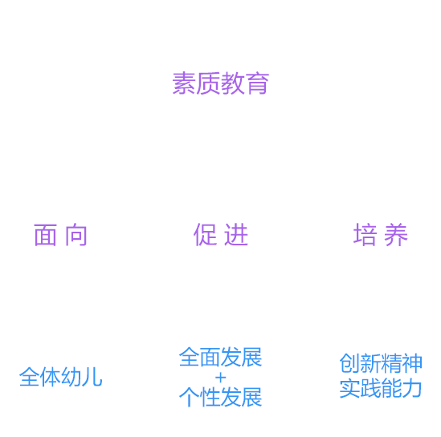

教育观
小逗网络 测试样片
XIAODOU NETWORK
TECHNOLOGY
素质教育
（1）素质教育的含义
素质教育是以促进学生的全面发展为目的，以提高国民素质为宗旨的教育。

素质教育
（2）素质教育的特点
发展性
+
全面性
+
主体性
+
基础性
+
开放性
+
全体性
+
培养学生自我学习等能力，教育重心转移到启迪心智、增强后劲上。
每个学生在德智体美等方面齐发展，素质结构得到整体优化。
教师要尊重学生的自觉性、自主性和创造性。
掌握社会必需的教育内容，及“学会做人、学会学习”等基本技能。
即教育空间与教育渠道的开放性，不再局限于校内、课内和课本。
全体适龄儿童接受正规教育，是素质教育最本质、最根本的要求。
素质教育
（3）素质教育的目标
—
身体发育
—
促进学生的身体发育
—
平等公民
—
造就平等公民
—
法律意识
—
培养学生法律意识
—
成熟心理
—
促进学生心里的成熟化
—
科学精神
—
培养科学精神和态度
—
自我习惯
—
培养个体的自我学习习惯和能力
———
生存能力和基本品质
———
培养学生的生存能力和基本品质
素质教育的途径和方法
实施素质教育的途径和方法
政策
+
教学活动
+
教育者
+
政策
·
深化教育改革，为实施素质教育提供条件
教学活动
·
教育目的落实到教学中
·
教学内容与实际相结合
·
促进幼儿全面发展
·
调动幼儿积极性、主动性，培养创造性
·
培养幼儿心理素质
教育者
·
提高教师队伍的水平、师德素养
·
更新教师理念
·
提高教师待遇
奠基教育重要性及特点
奠基教育
幼儿时期是智力开发的最佳阶段
幼儿时期是人格形成的关键时期
幼儿时期是性教育的关键时期
奠基教育的特点
奠基教育的四项特点
生活化
+
潜在性
+
活动性和经验性
+
游戏化
+
生活化
奠基教育具有较强的生活化特征，课程的内容多来自幼儿的生活，课程实施贯穿于幼儿每天的生活中。
潜在性
鉴于幼儿身心发展的特点，幼儿园课程不仅体现在课程表和教材中，还体现在生活、游戏和其他幼儿喜闻乐见的活动中。
活动性和经验性
幼儿主要通过各种感官来认识世界。只有在获得丰富的感性经验的基础上，幼儿才能更好地理解事物，进而形成相对抽象的认识。
游戏化
游戏符合幼儿的年龄特征，能够满足身心发展的需要，是幼儿园的基本活动，也是幼儿教育的基本原则之一。